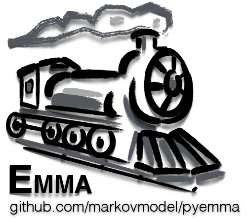

<br>
EMMA (Emma's Markov Model Algorithms) is a python API and set of command line tools for building and analyzing Markov Models from molecular dynamics simulation data.

<br>
<br>
For developers: <a href="https://github.com/markovmodel/PyEMMA"> EMMA Github page </a>


